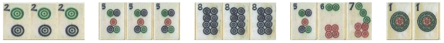
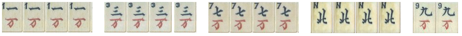
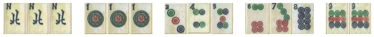
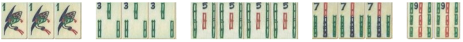
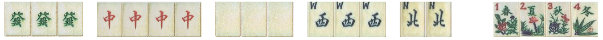
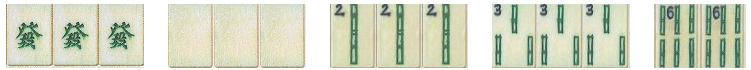
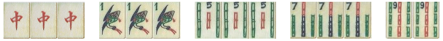
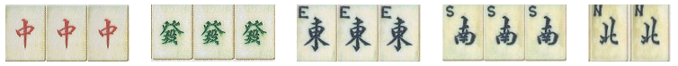
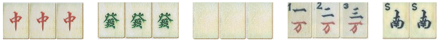
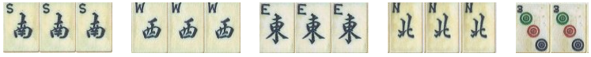

MAH JONG HANDS - Ordinary
(As listed in Max Robertson's book
, 2007 edition)

2.PURITY hand is an ordinary hand with no winds or dragons. :: super-clean; form: PKC's (one C)
3.ALL KONGS hand has 4 kongs in one suit with winds and/or dragons and a pair. :: clean; form: K's
4.Buried treasure Similar to ordinary hand but cannot pick up discards, i.e. the hand is entirely concealed. Also must have more than one chow. :: clean; form: PKC's (2 c's); no discards allowed
7.Chinese odds. 4 pungs/kongs and a pair; only odd numbers of one suit :: super-clean (odds) ; form: PK's
18.Heavenly paradise. A pung/kong of each of the dragons plus a pung/kong of the wind of the round when it is the players own wind, a pair of any wind. A bouquet of flowers must also be held. :: only WD ; Ordinary ; form:PK for each dragon + PK of own wind + pair of W's
20.Lily of the valley. A pung/kong of green and white dragons, 2pungs/kongs of green bamboos (2,3,4,6,8) plus a pair of green bamboos. All tiles may be punged from a discard. :: Greens & Dragons; form: PK(green dragons) + PK(white dragons) + 2PK of greens + pair
22.Royal ruby hand. Similar to the jade hand, but this time using the red dragons and red bamboos (1,5,7,9) :: Red Bamboos & Red Dragons ; Form: PK of red dragons + PKC of red Bams (1,5,7,9)+pair of red Bams
29.ALL WINDS AND DRAGONS. Pungs/kongs and a pair of winds and dragons only, no suit tiles. :: WD ; PK's and pair
30.THREE GREAT SCHOLARS. Pungs/kongs of all three dragons plus PKC and a pair. :: clean ; form:PK of each dragon + PKC + pair i.e.:GGG+RRR+WWW + PKC + pair
31.THE FOUR BLESSINGS. Pungs/kongs of each of the four winds plus a pair of anything. :: clean ; form:PK of each wind + any pair i.e: NEWS+NEWS+NEWS+pair
The following shorthand used for ease of description: P Pung K Kong C Chow PK pung/kong PKC pung/kong/chow WD winds/dragons PK1 PK from suit 1 PK2 PK from suit 2 PK3 PK from suit 3 (1,2,3 are the main suits of bamboo, circle, character) Clean hand = one suit & WD Superclean hand One suit no WD NEWS North wind + East wind + West wind + South wind G = green dragon R = red dragon W = Red dragon GRW Green dragon + Red dragon + White dragon